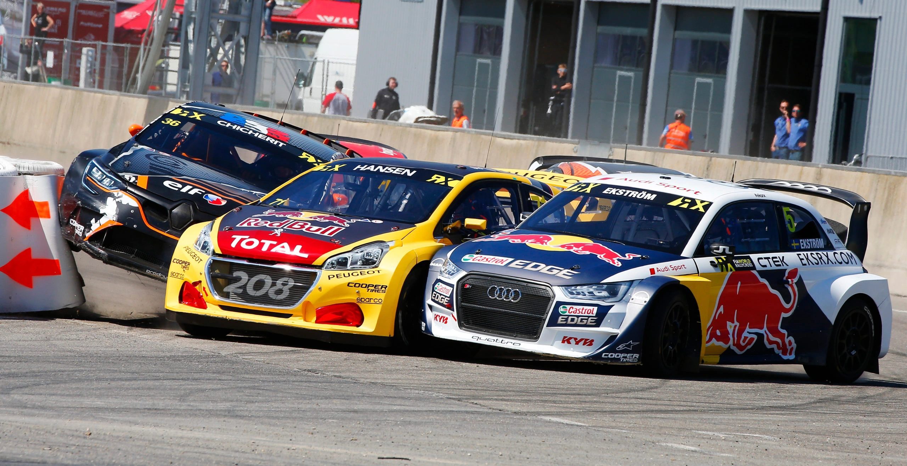
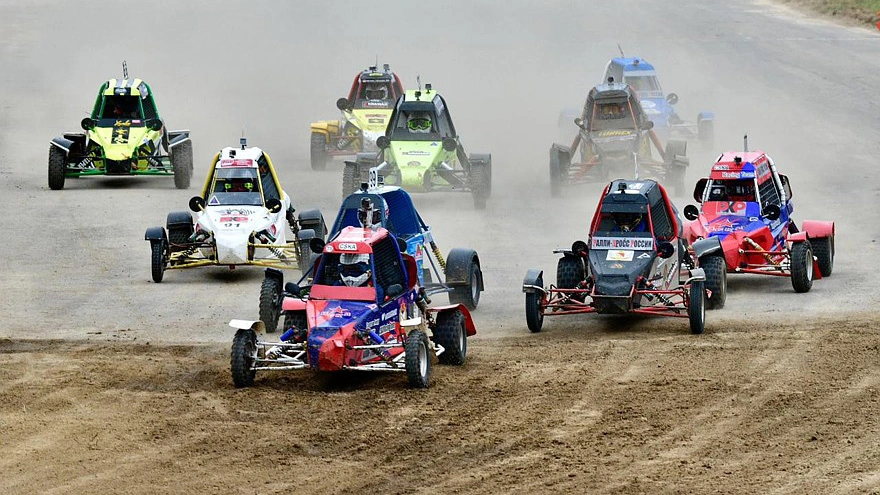
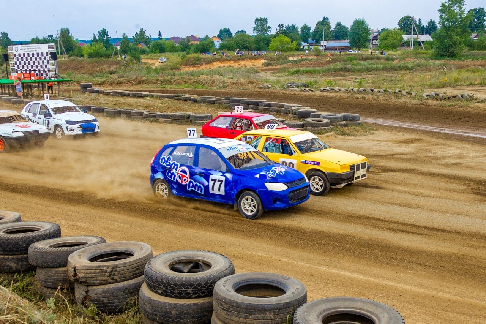
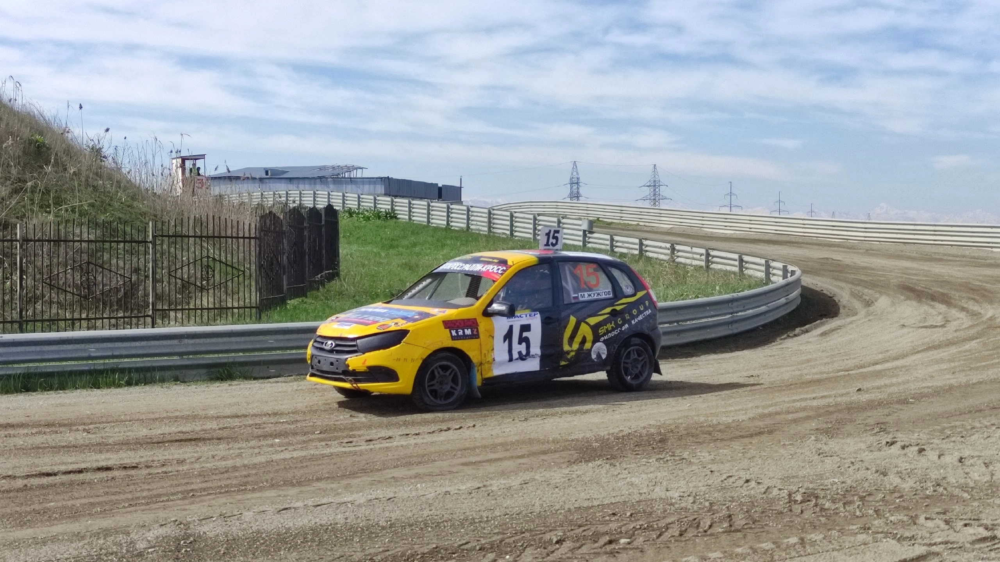
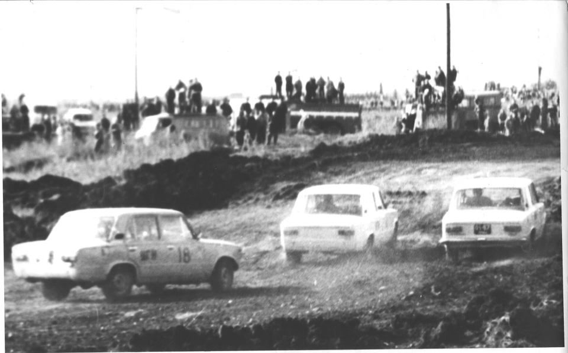
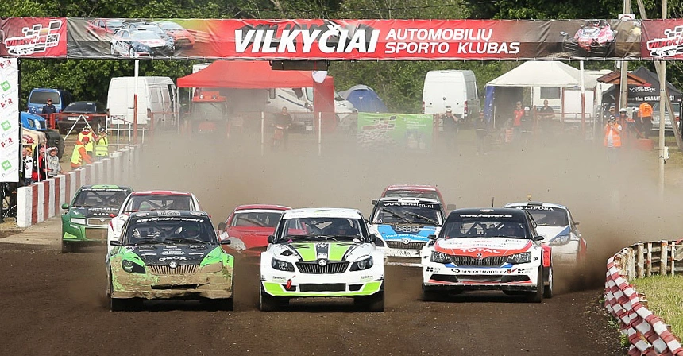
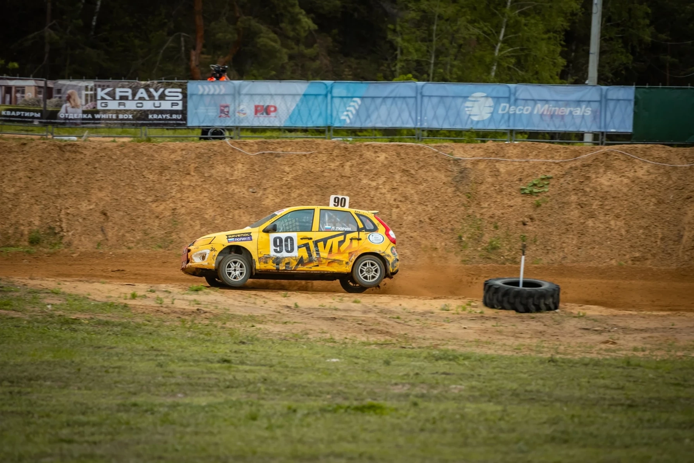

Автокросс
Автокросс — это гонки с совместным стартом на кольцевой трассе с грунтовым покрытием. Участники соревнуются непосредственно друг с другом, а не на время. Часто происходит контактная борьба между автомобилями участников заездов.

Особенности автокросса:
- зрителям видна вся трасса или большая её часть;
- неровности поверхности, ямы, трамплины, спуски и подъёмы, присутствующие на трассах.

Для участия в автокроссе допускаются легковые кузовные и грузовые автомобили, а также специальные кроссовые авто (багги) — одноместные автомобили с открытыми колёсами и пространственной рамой, сделанные специально для таких гонок.
Правила
Некоторые правила соревнований по автокроссу:
- Старт даётся с места, осуществляется со стартовой решётки (части трассы с размеченными стартовыми местами для автомобилей).
- Количество кругов в заездах устанавливается исходя из длины трассы и должно последовательно (от первых отборочных заездов к финальным) увеличиваться минимум на один круг.
- Результаты в заездах определяются: спортсмены, прошедшие установленное количество кругов, классифицируются в соответствии с порядком, в котором они пересекли финишную линию, спортсмены, не прошедшие установленное количество кругов, — в соответствии с их количеством и порядком прохождения последнего из них.
- Во время заезда оказание посторонней помощи пилоту остановившегося или замедлившего движение автомобиля запрещены, категорически запрещается ремонт автомобиля на трассе во время заезда.

Техника
Для участия в автокроссе допускаются легковые кузовные и грузовые автомобили, а также специальные кроссовые авто (багги). Багги — это одноместные автомобили с открытыми колёсами и пространственной рамой, сделанные специально для участия в соревнованиях по пересечённой местности.

История
Автокросс зародился в начале XX века как развлечение для любителей автомобилей и гонок. Первые соревнования проходили на обычных дорогах и были скорее испытанием на прочность автомобилей и мастерство водителей.
В 1920-х годах автокросс стал развиваться как отдельный вид спорта, были разработаны специальные правила и требования к автомобилям для участия в соревнованиях.
В Советском Союзе соревнования по автокроссу начали регулярно проводиться с 1949 года, при этом первые несколько десятилетий в них участвовали преимущественно грузовые автомобили и внедорожники, лишь изредка к которым присоединялись легковые автомобили. Только с 1973 года начали постоянно проводиться состязания и среди чисто легковых машин.

Известные турниры
Некоторые соревнования по автокроссу:
- Чемпионат Европы FIA по автокроссу — гоночные соревнования, проводимые на трассах с естественным рельефом и незапечатанным покрытием длиной от 800 до 1400 метров. Одновременно в квалификационных заездах участвуют до 10 автомобилей, за которыми следуют два полуфинала и финальная гонка.
- Чемпионаты страны по автокроссу — проводятся Российской автомобильной федерацией многоэтапно по системе зачёта, применяемой в чемпионатах Европы — с четвертьфинальными, полуфинальными и финальными заездами.


Подробности одного из главных событий — в нашем репортаже: результаты Гонки Чемпионов.
Ближайшие этапы автокросса
31 марта – 2 апреля
1 этап Чемпионата России
г. Грозный
3–5 апреля
2 этап Чемпионата России
г. Грозный
15–17 мая
3 этап Чемпионата России
г. Воронеж